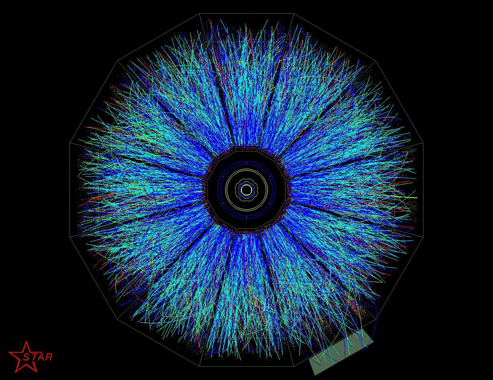

A Teoria Quântica
A teoria quântica também é conhecida como mecânica quântica ou física quântica, e tem como foco principal de estudo o mundo microscópico.Os princípios da quantização da energia, propostos por Einstein e Planck, e as observações experimentais do espectro atômico dos elementos mostravam que as leis de Newton não produziam resultados corretos quando aplicadas a sistemas muito pequenos, como átomos e moléculas.

Particulas atomicas no mundo Quantico .
Para explicar o movimento dos elétrons em torno do núcleo foi criada – por Planck, Bohr, Einstein e Schrodinger – uma nova teoria, a da Mecânica Quântica. Apesar de seu enorme sucesso, a teoria de Bohr tinha várias lacunas. O espectro de átomos mais complexos não podia ser explicado, gerando perguntas como: por que algumas raias do espectro são mais intensas do que outras? E, principalmente, como os átomos interagem uns com os outros formando sistemas estáveis?
No ano de 1911, Rutherford propôs um modelo atômico no qual os elétrons (e-) circulavam o núcleo de carga positiva, de forma análoga ao movimento dos planetas em torno do Sol. Embora fosse simples e coerente, esse modelo apresentava um erro incorrigível, pois toda partícula que descreve um movimento circular possui aceleração. Dessa forma, como havia explicado Maxwell através de suas equações, por ter aceleração o elétron deveria emitir luz, perdendo energia gradualmente até se chocar com o núcleo.

Posicao dos eletrons no microscopico mundo da teoria quantica.
Bohr, baseando-se nos conceitos de quantização, estipulou que a energia dos elétrons em suas órbitas em torno do núcleo também era quantizada. Isto é, em um átomo como o do hidrogênio existem várias órbitas estáveis possíveis para o elétron, cada uma com energia diferente. Assim, ele pôde corrigir o modelo de Rutherford. Mas somente com o trabalho de Erwin Schrodinger e Werner Heisenberg, em 1925, é que a teoria quântica se estabeleceu. Schrodinger postulou uma equação que permite calcular os níveis de energia e a probabilidade de se encontrar uma partícula em determinada região.

Particulas subatomicas depois de serem bombardeadas no acelerador de particulas.
Pelas Leis de Newton, podemos descrever o movimento dos elétrons (posição e velocidade) a partir das forças que atuam sobre eles. A Teoria Quântica, por sua vez, calcula a probabilidade de se encontrar o elétron (ou outra partícula) em uma região do espaço, usando a equação de Schrodinger.